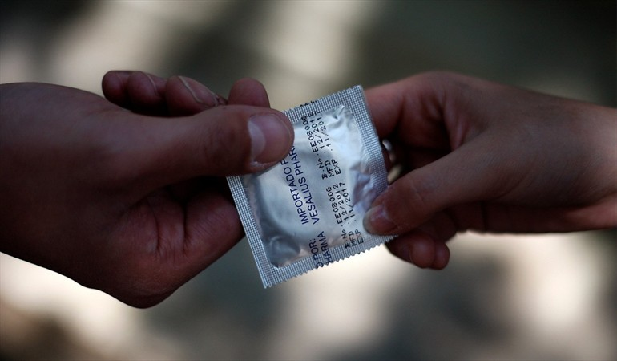
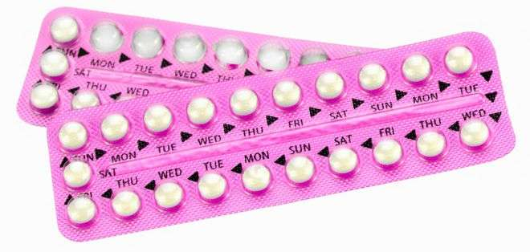
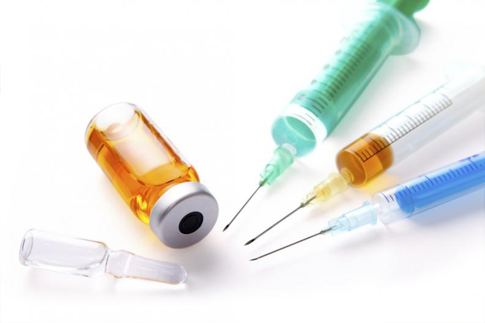
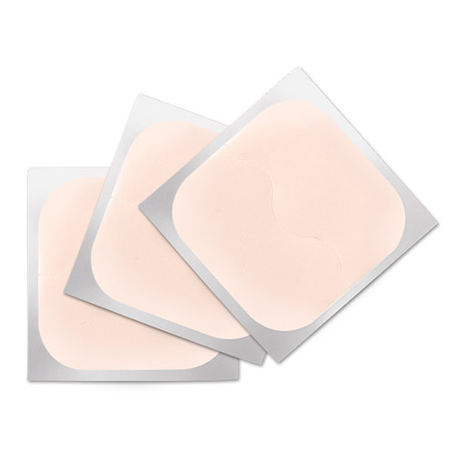

Prevención del embarazo en la adolescencia
Cuando se entra en la etapa de la pubertad se comienzan a ver cambios biológicos pero esto no
significa que se este listo para ser padres.
Tener un bebe a temprana edad puede ocacionar diversos problemas, entre ellos estan los Problemas
economicos, problemas sociales y tambien problemas de salud, por eso prevenir el embarazo en la
adolescencia es tan importante y depende todos y cada uno de nosotros.
El embarazo en la adolescencia no se cura, se previene, puesto que esta no es una enfermedad
sino una problemática. Niñas entre las edades de 13-15 años que estan saliendo embarazadas, por
diferentes causas, entre ellas la indiferencia social respecto a la importancia de la abtinencia,
por falta de educación sexual y el desconocimiento del uso correcto de los métodos anticonceptivos.
Educación sexual en la adolescencia: La educación sexual en la etapa de la
adolescencia tiene mucha importancia debido que hablar de sexualidad disminuye cierto riesgo de
embarazo. La educación sexual está diseñada para ayudar a los jóvenes a sumar información,
herramientas (anticonceptivos) y motivación para tomar decisiones saludables sobre el sexo y la
sexualidad.
No todos los padres de familias resivieron una correcta educación sexual, de tal forma que ellos no estan capacitados
para hablra de esta clase de temas con sus hijas e hijos, por lo tanto creen que que hablar de esto los instan a tener relaciones sexuales.
Métodos anticonceptivos: Los anticonceptivos se han convertido hoy en un recurso
fundamental para disfrutar de la sexualidad sin tener miedo a que se produzca un embarazo no
deseado, lo malo de esto es quenno hay informacion al alcance de como utilizarlo correctamente.
Los métodos anticonceptivos que pueden ser utilizados por adolescentes serían los
siguientes:
Abstinencia: Ciertamente la abstinencia es el mejor y más eficaz método
anticonceptivo que existe, este consiste en no mantener relaciones sexuales, puesto que si dos
personas no mantienen relaciones sexuales el esperma no puede fecundar el óvulo y es imposible
quedar embarazada.
Condón: Este condón es una funda fina que cubre el pene para recolectar el esperma
y evitar que ingrese al cuerpo de la mujer. En general, los condones masculinos están hechos de
látex o poliuretano. He aqui el uso correcto del condón.
1. El condón debe colocarse en la punta del pene erecto, sujetándolo con la yema de los dedos, dejando libre el espacio superior (receptáculo).

2. A continuación se desenrolla con la mano que queda libre hasta la base del pene, asegurándote de que no haya una burbuja de aire en el receptáculo.
3. Tras la eyaculación, retira antes de perder la erección. Para ello, sujeta el condón desde la base, presionándolo contra el pene para que el semen no salga; luego desliza con cuidado.
4. Una vez que se ha quitado, es necesario anudarlo por la parte abierta y tirarlo a la basura.
Recuerda verificar la fecha de caducidad del condón antes de usarlo, y sacarlo de su empaque sin emplear tijeras, dientes ni uñas, sino la yema de los dedos, para evitar romperlo.
Asimismo, es importante que conozcas en qué momento se coloca el condón, esto es, desde el inicio al final de la relación, y siempre debe ser uno nuevo para cada contacto sexual.
Píldora anticonceptiva: Las píldoras anticonceptivas son un tipo de medicamento
con hormonas que tomas diariamente para prevenir embarazos. Hay muchas marcas diferentes de
píldoras. La píldora es segura, asequible y eficaz si la tomas siempre a tiempo. he aqui el uso correcto de la pildora anticonceptiva

1. Los comprimidos anticonceptivos deben tomarse por vía oral y sin masticar.
2. Se deben comenzar a tomar el primer día que se inicia la menstruación: cada día un comprimido y a la misma hora.
3. Después de 21 días de tratamiento, se descansa durante 7 días (o lo que es igual durante una semana no hay que tomar la píldora) y después se comienza un nuevo envase.
Anticonceptivo inyectable: Este es un método de control de natalidad que puede
provocar una pérdida temporal de densidad ósea, en particular en las adolescentes. Sin embargo,
esta pérdida ósea suele recuperarse luego de discontinuar el uso de DMPA. El Depo-Provera debe ser
suministrado cada tres meses, con una inyección de 150 miligramos que deben ser aplicados en la
nalga o en el brazo. he aqui el uso correcto
1. Si recibes la primera inyección anticonceptiva en los primeros 7 días desde el inicio de tu periodo, estás inmediatamente protegida contra embarazos.
2. Si te aplicas la inyección en el plazo de 7 días después de un aborto o un aborto espontáneo, también estás inmediatamente protegida contra embarazos.
3. Si te aplicas la inyección en el plazo de 3 semanas posteriores a tener un bebé (parto), también estás inmediatamente protegida.
4. Si te la aplicas en cualquier otro momento, debes usar otro método anticonceptivo (como el condón) durante la semana posterior a la aplicación de la primera inyección.

Parche anticonceptivo: Es un parche de plástico fino que se adhiere a la piel y
libera hormonas al torrente sanguíneo a través de la piel. El parche se coloca en la parte baja del
abdomen, las nalgas, la parte externa del brazo o la parte superior del cuerpo. Se coloca un nuevo
parche una vez por semana durante 3 semanas y no se usa parche en la cuarta semana para permitir la
menstruación. he aqui el uso correcto.
1. adhiere el parche sobre la piel seca y limpia del abdomen, la parte superior externa del brazo, las nalgas (glúteos) o la espalda, pero NO sobre el pecho.
2. Usa el parche durante 1 semana (7 días), luego quítalo y coloca uno nuevo.
3. Cambia el parche una vez a la semana durante 3 semanas seguidas y la 4 semana no se aplica para permitir la menstruación.
